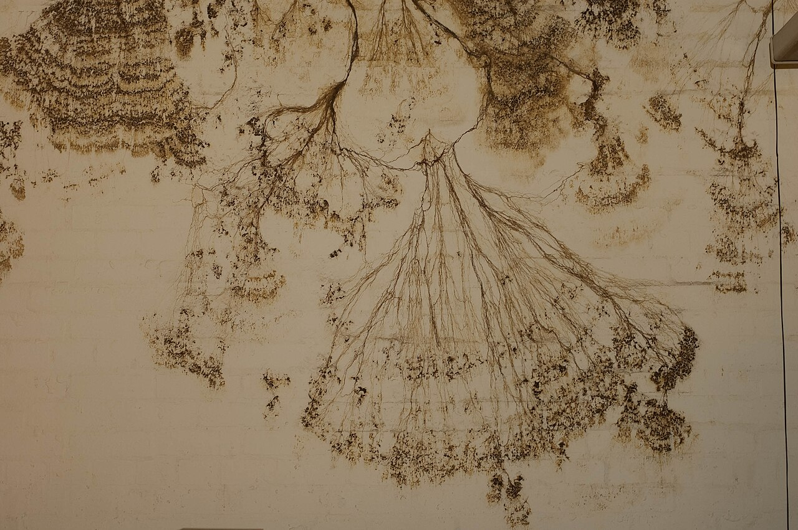
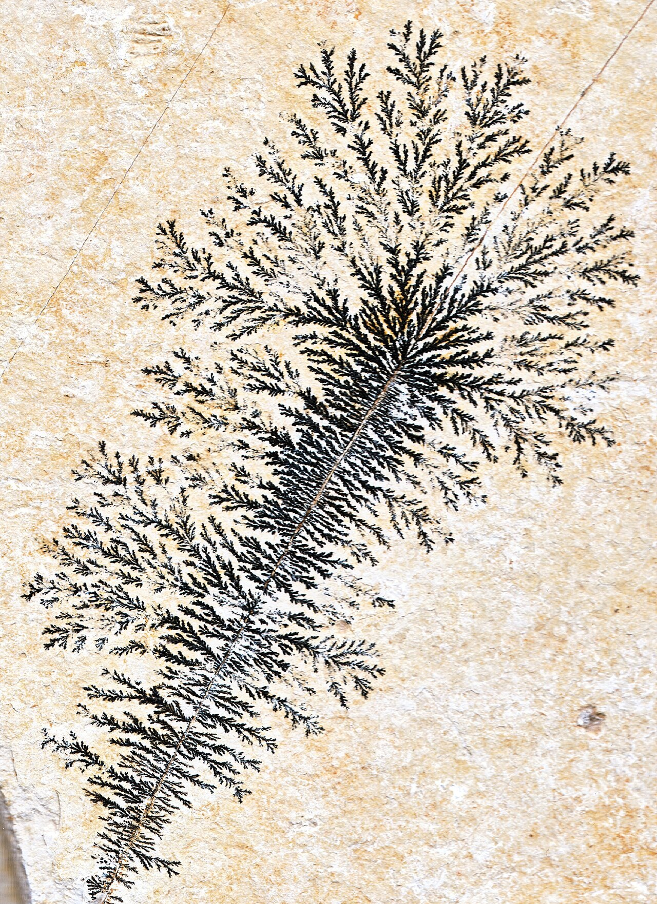
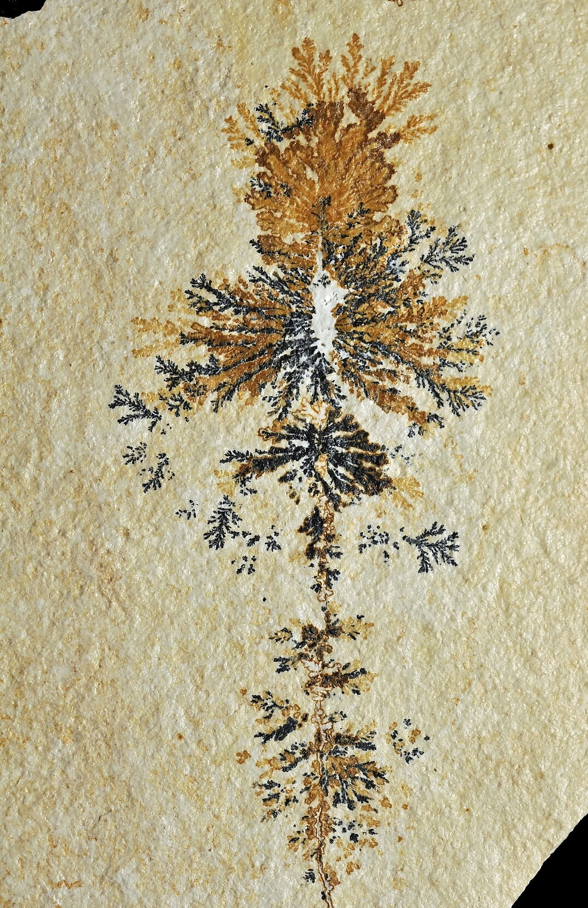

Su dinero vive en una



que no ve.
A una escuela la financia la asistencia. Un fondo de beneficios paga primas que el estado cubriría. Ambas cosas se deciden en los hogares, donde ninguna institución llega. Mycelium le da a cada persona un ayudante: una IA que le escribe por mensaje en su idioma, pagada por la institución, que trabaja para ella.
La ruta del autobús, los trámites de beneficios y el horario de trabajo de una familia deciden si un niño llega a la escuela. Durante un siglo la única ayuda fue un trabajador social con más de cien estudiantes. Hoy la escuela manda una carta.
No una carta.
La quinta falta de un niño ya está en los registros de la escuela. Hoy dispara un aviso de ausentismo. Con Mycelium dispara una oferta de la escuela, en el idioma de la familia: un ayudante que trabaja en lo que sea que mantiene al niño en casa, porque la verdadera barrera casi siempre es algo que la escuela nunca ha visto.
La escuela paga solo cuando la asistencia mejora, medida contra el año anterior de cada estudiante y desplegada escuela por escuela para que la mejora sea real. Nada por adelantado.
El ayudante es suyo.
La institución lo paga porque su presupuesto mejora. La persona lo usa porque trabaja para ella. Esas dos cosas solo coinciden si el ayudante es honesto sobre de qué lado está, así que lo construimos para que sea de la persona.
Ayuda con cualquier cosa.
El autobús, la renovación de Medi-Cal, el aviso de corte de luz, la reunión del IEP, el formulario que el condado nunca explicó. No solo lo único por lo que paga la institución. La barrera para eso casi siempre es otra cosa.
Responde ante ellos.
Nunca presiona a una niña enferma para que vaya a clase. Nunca le cuenta a la escuela los motivos de una familia; la escuela recibe patrones en conjunto, nunca la historia de nadie. Le dice que no a la institución antes que a la familia, y esa regla está escrita donde las dos pueden leerla.
Pueden decir que no.
Nada se tramita, se llama ni se envía sin un sí a esa acción exacta. Si dicen alto, se detiene. Si rechazan la oferta, la escuela no se entera de nada más que eso.
Ya está en su bolsillo.
Llega por mensaje de texto o por WhatsApp, lo que la familia ya use. Nada que descargar, ni portal, ni contraseña que olvidar. Su personal tampoco recibe nada nuevo que manejar.
Se queda con ellos.
Primero lo patrocina una escuela. Cuando más adelante un fondo sindical, una clínica o un colegio patrocina a la misma persona, el ayudante ya está ahí, ya tiene confianza, ya conoce la situación.
A la brecha que esto cierra la llamamos alineación varada: resultados que una institución y una persona quieren por igual, y que nadie perseguía porque ayudar a una persona a la vez costaba más de lo que nadie podía recuperar. Los programas mejor dirigidos le asignan a un trabajador social entre 110 y 125 estudiantes, así que uno para cada familia nunca fue costeable. Y lo que funciona es la ayuda, no la información: en el experimento más grande sobre esto, ocho minutos de ayuda práctica con un formulario de ayuda financiera subieron la inscripción universitaria ocho puntos porcentuales, mientras que un folleto con la misma información no cambió nada. Un ayudante hace que esos ocho minutos sean costeables para todos. La institución paga porque su cifra mejora; la persona recibe una ayuda que nunca habría podido comprar.
Primero leemos cómo le financian.
Su fórmula de financiamiento y sus registros, línea por línea. Encontramos cada dólar que depende de algo en la vida de una persona: la asistencia de un distrito, las primas de Medicare de un fondo. La cifra va primero, gratis.
Antes de que el ayudante le escriba a nadie, corre sobre los registros del año pasado. Usted ve a quién habría contactado y qué habría dicho. Lo corrige y decide cuándo está listo.
Una quinta falta, o un afiliado que cumple 65 años, envía una oferta de parte suya en su idioma. Dicen que sí o no. Su personal ve solo los casos que necesitan a una persona.
Días de asistencia recuperados contra el año anterior de cada estudiante, o primas que ahora paga el estado en lugar de usted. Se despliega escuela por escuela, para que vea la mejora antes de ampliarla. Nuestra parte es un cuarto de lo recuperado; el resto queda con usted.
Piense en el seguro médico. Su empleador lo paga, el médico trabaja para usted, y su empleador gana cuando usted está bien sin ver nunca su expediente. El mismo arreglo, hoy al alcance de cada familia y cada jubilado.
Trabaja para la familia.
La escuela ve a quién se le ofreció un ayudante, según sus propios registros, y si la asistencia mejoró. Ve patrones en conjunto, como cuarenta familias en la misma ruta de autobús recortada, que es una política que puede arreglar, pero nunca los motivos de nadie. Y ve cada regla que sigue el ayudante, por escrito, antes de que nada salga en vivo.
La escuela ve resultados.
Nunca ve la dirección, el aviso de desalojo, la pregunta migratoria ni al abuelo enfermo. Nunca ve un mensaje salvo que la familia decida compartirlo, ni nada sobre una familia que no dijo que sí. Esto está garantizado en el sistema, no en una instrucción. Los datos estudiantiles quedan bajo las reglas de funcionario escolar de FERPA y el CA-NDPA de California, y nunca se usan para entrenar modelos.
Nunca los motivos.
Donde el dinero depende del afiliado.
Instituciones, el resultado por el que paga cada una, y dónde trabaja Mycelium hoy.
Ahora sí la ve.
Envíenos sus informes. En una semana le devolvemos cuánto es recuperable, línea por línea, y qué le habría dicho el ayudante a las primeras cuarenta personas que contactó el año pasado.
Envíenos sus informes